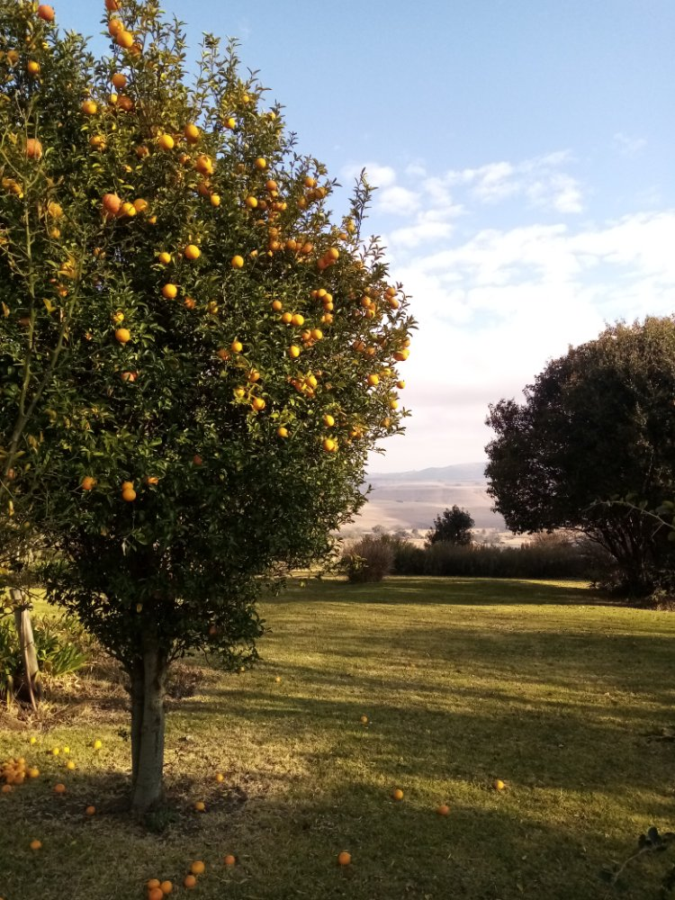

A solo or couples transformative journey in the Midlands to pause, reflect, and return refreshed and with clarity, confidence, and a new perspective.
This is an invitation to pause, reconnect, and return refreshed.
Escape to where the mountains hug the sky, ancient tales echo under starlight, and self-discovery feels like an adventure.

This retreat is for you if:
You need more than a break. You need a breakthrough.
You're struggling with burnout or anxiety or just in need of a reset.
You're navigating a major transition in life and want to reset and recalibrate and design your own life story in a unique way.
You're successful by social standards but crave creative self-expression, calm, and connection.
You're seeking clarity of purpose and a more meaningful and joyful life.
Guided sessions
Guided daily breathwork and gentle integrating coaching sessions.
Restorative moments
Plenty of time to enjoy the beautiful views, connect with nature, and explore the region.
Optional extras
Hiking at Giant Castle Nature reserve (self-drive) or an extra massage.
Your journey of transformation awaits...
3-Day Journey Program
Location:Antbear Eco Lodge, Drakensberg
This is an intensive introductory self-discovery coaching program. The perfect place for healing, this program is for those who feel overwhelmed, hopeless, or confused and want to dip their toes into the coaching program without committing to the full 5 or 7 day program.
At the end of the program you will have gained more clarity on your purpose-aligned next steps, and have identified the resources you need in order to move closer to your goal.
The 3-day program is a condenced version of the 5 and 7 day program, and excludes a massage and parts integration coaching session and have very little free time for leisure activities. You are, however, welcome to book an extra day to explore the region or simply relax on your own.
Program Schedule
Arrive and settle in
Check-in anytime from 14.00pm and settle in.
We'll start off the journey in an introductory coaching session before dinner, establishing a baseline as well as identify the shift you hope to make during the program and what you want to walk away with.
Enjoy dinner either in the main lodge area or in the comfort of your room.
After dinner you will be guided to the outdoor hammock camp with Mlindeni, where you can enjoy views of the uninterrupted starry sky as you lay in a hammock, listening to African folk tales which has been passed on through multiple generations, giving you insight into the Zulu culture while reminding you of your connection to the stars and your ancestors.
Day of Transformation
We'll start the day with a mindful nature walk and add an energy and breathwork routine to get your energy flowing correctly and prepare your body for the energetic shift.
After breakfast we'll start with an outdoor (weather permitting) coaching session where you will be guided through a gentle process through all the levels of your neurology to uncover the why behind your particular goal for a purpose-aligned vision of a desired future you might have, whether it is a better relationship, a career focused goal, or simply gaining clarity as to what a happier life will look like for you.
After lunch we'll continue with another coaching session, this time to identify the resources you need to move closer to your goal.
Preparing for the return
After our final morning practice and breakfast we'll have a practical wrap-up coaching session to evaluate your shift and put all your insights into an actionable plan you can take home to integrate all these changes into your daily life.
You can choose to have lunch at the lodge or head back home with a lunch pack.
5-Day Journey Program
Location:Antbear Eco Lodge, Drakensberg
This is an intensive self-discovery program, combining transformative coaching with relaxation and nurturing at your own pace. The perfect place for healing, this program is for those who feel overwhelmed, hopeless, or confused.
At the end of the program you will have gained more clarity on your purpose-aligned next steps, and have worked through the first layers of resistance that keeps you from achieving your dream life.
The 3-day program condences the sessions, while the 7-day program allows for more leisure time and more focused coaching sessions.
Program Schedule
Arrive and settle in
Check-in anytime from 14.00pm and settle in.
We'll start off the journey in an introductory coaching session before dinner, establishing a baseline as well as identify the shift you hope to make during the program and what you want to walk away with.
Enjoy dinner either in the main lodge area or in the comfort of your room.
After dinner you will be guided to the outdoor hammock camp with Mlindeni, where you can enjoy views of the uninterrupted starry sky as you lay in a hammock, listening to African folk tales which has been passed on through multiple generations, giving you insight into the Zulu culture while reminding you of your connection to the stars and your ancestors.
Uncovering purpose-aligned goals
We'll start the day with a mindful nature walk and add an energy and breathwork routine to get your energy flowing correctly and prepare your body for the energetic shift.
After breakfast we'll start with an outdoor (weather permitting) coaching session where you will be guided through a gentle process through all the levels of your neurology to uncover the why behind your particular goal for a purpose-aligned vision of a desired future you might have, whether it is a better relationship, a career focused goal, or simply gaining clarity as to what a happier life will look like for you.
After lunch you have some free time to process your insights and what came up during the session, before we'll go for a walk around the lodge enjoying the view and fresh air.
Integrating conflicting parts
After our regular morning practice and breakfast you will receive a two and a half hour massage package in the comfort of your room.
After lunch we'll identify the inner conflict that keeps you from reaching your goal and integrate opposing parts in a coaching and connection session, creating more peace and harmony in your inner as well as outer life. The rest of the afternoon is free for you to relax, process the insights, and just relax.
Obtaining the resources to move you forward
After the regular morning practice and breakfast we'll have another deep coaching session to evaluate options or choices and identifying all the resources needed to move you towards your goal. In this session, you'll be guided through two possible futures, evaluating which one is most aligned with your values, beliefs, and purpose. Once you've decided which metaphorical road to take, we'll identify the resources to help you gain the confidence to take the next step.
After lunch you have a day of leisure to use as you want.
Preparing for the return
After our final morning practice and breakfast we'll have a practical wrap-up coaching session to evaluate your shift and put all your insights into an actionable plan you can take home to integrate all these changes into your daily life.
You can choose to have lunch at the lodge or head back home with a lunch pack.
7-Day Journey Program
Location:Antbear Eco Lodge, Drakensberg
This is an intensive and deep self-discovery program with ample to to integrate and simply relax and reconnect with yourself. Combining transformative coaching with relaxation and nurturing at your own pace, this program allows you to unwind and explore the region and has extra coaching sessions for those seeking deeper change. The perfect place for healing, this program is perfect for those recovering from burnout, depression, or struggle with substance abuse.
At the end of the program you will have gained more clarity on your purpose-aligned next steps, and have worked through the first layers of resistance that keeps you from achieving your dream life and gained a toolkit of practical and easy tools you can take home to continue the journey of transformation. This program also includes three virtual follow-up sessions on your return back home.
Program Schedule
Arrive and settle in
Check-in anytime from 14.00pm and settle in.
We'll start off the journey in an introductory coaching session before dinner, establishing a baseline as well as identify the shift you hope to make during the program and what you want to walk away with.
Enjoy dinner either in the main lodge area or in the comfort of your room.
After dinner you will be guided to the outdoor hammock camp with Mlindeni, where you can enjoy views of the uninterrupted starry sky as you lay in a hammock, listening to African folk tales which has been passed on through multiple generations, giving you insight into the Zulu culture while reminding you of your connection to the stars and your ancestors.
Uncovering purpose-aligned goals
We'll start the day with a mindful nature walk and add an energy and breathwork routine to get your energy flowing correctly and prepare your body for the energetic shift.
After breakfast we'll start with an outdoor (weather permitting) coaching session where you will be guided through a gentle process through all the levels of your neurology to uncover the why behind your particular goal for a purpose-aligned vision of a desired future you might have, whether it is a better relationship, a career focused goal, or simply gaining clarity as to what a happier life will look like for you.
After lunch you have some free time to process your insights and what came up during the session, before we'll go for a walk around the lodge enjoying the view and fresh air. The walk is an invitation to slow down and search for the beauty in everyday things by taking photo's.
Integrating conflicting parts
After our regular morning practice and breakfast we'll identify the inner conflict that keeps you from reaching your goal and integrate opposing parts in a coaching and connection session, creating more peace and harmony in your inner as well as outer life. The rest of the day is free for you to relax, process the insights, and simply relax.
Navigating choices
After our regular morning practice and breakfast you will receive a two and a half hour massage package in the comfort of your room. For couples each will only receive a one hour massage.
After lunch we'll spend some time outdoors (weather permitting) to compare two possible futures and the impact of each to identify what your true desire is, while removing the conflict that stops you from moving ahead.
The rest of the afternoon is free for you to relax, process the insights, and just relax.
Obtaining the resources to move you forward
After the regular morning practice and breakfast we'll have another deep coaching session to identifying all the resources needed to move you towards your goal. In this session, you'll be guided through a timeline towards your chosen future, and identify the resources to help you gain the confidence to take the next step.
After lunch you have a day of leisure to use as you want.
Preparing for your return
After the regular morning practice and breakfast we'll have a practical final coaching session to close the program, making sure you have a clear actionable plan you can take home to integrate all these changes into your daily life.
After lunch you have a day of leisure to use as you want.
Ready for action
After our final morning practice and breakfast we'll have a wrap-up and reflection session to evaluate your shift before .
You can choose to have lunch at the lodge or head back home with a lunch pack.